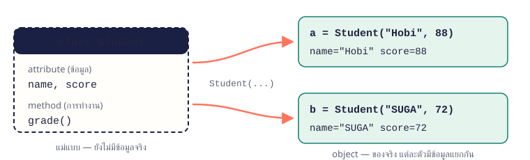

12.1 class คือแม่แบบ object คือของจริง
class อธิบายว่าสิ่งหนึ่งมีข้อมูล (attribute) อะไร และทำอะไรได้ (method) ส่วน object คือของจริงที่สร้างจาก class แต่ละตัวมีข้อมูลของตัวเอง

บทที่ 12 · ใช้งานจริง
รวมข้อมูลและการทำงานที่เกี่ยวข้องกันไว้ใน class แล้วสร้าง object ได้หลายตัว
สร้าง class กำหนด attribute ใน __init__ เขียน method สร้าง object หลายตัว และจัดการ list ของ object ได้
class อธิบายว่าสิ่งหนึ่งมีข้อมูล (attribute) อะไร และทำอะไรได้ (method) ส่วน object คือของจริงที่สร้างจาก class แต่ละตัวมีข้อมูลของตัวเอง

__init__ ทำงานอัตโนมัติตอนสร้าง object ใช้กำหนดค่าเริ่มต้น self คือ object ตัวที่กำลังสร้าง/ใช้งานอยู่ self.name = name จึงหมายถึงเก็บ name ไว้ใน object นี้
class Student:
def __init__(self, name, score):
self.name = name
self.score = score
a = Student("Hobi", 88)
b = Student("SUGA", 72)
print(a.name, a.score)
print(b.name, b.score)Hobi 88 SUGA 72
ตอนสร้าง Student("Hobi", 88) ไม่ต้องส่ง self Python ใส่ให้เอง
method คือฟังก์ชันใน class รับ self เป็นพารามิเตอร์แรกเสมอ จึงอ่านและแก้ข้อมูลของ object ได้
class Student:
def __init__(self, name, score):
self.name = name
self.score = score
def grade(self):
return "ผ่าน" if self.score >= 50 else "ไม่ผ่าน"
def add_bonus(self, points):
self.score += points
s = Student("Jungkook", 45)
print(s.grade())
s.add_bonus(10)
print(s.score, s.grade())ไม่ผ่าน 55 ผ่าน
ถ้า print(object) ตรง ๆ จะได้ข้อความอ่านยาก เช่น <__main__.Student object at 0x...> เขียน method __str__ คืนข้อความที่ต้องการแสดงแทน
class Product:
def __init__(self, name, price):
self.name = name
self.price = price
def __str__(self):
return f"{self.name} ราคา {self.price:,.2f} บาท"
print(Product("Notebook", 1290))Notebook ราคา 1,290.00 บาท
เก็บ object ไว้ใน list แล้ววนลูปเรียก method หรืออ่าน attribute ได้เหมือนข้อมูลชนิดอื่น
class Student:
def __init__(self, name, score):
self.name = name
self.score = score
students = [Student("Hobi", 88), Student("SUGA", 72), Student("RM", 95)]
for s in students:
print(s.name, s.score)
best = max(students, key=lambda s: s.score)
print("สูงสุด:", best.name)Hobi 88 SUGA 72 RM 95 สูงสุด: RM
key=lambda s: s.score บอก max ให้เทียบด้วยคะแนน
object เก็บยอดเงินของตัวเอง และ method ตรวจกติกาก่อนเปลี่ยนยอด
class BankAccount:
def __init__(self, owner, balance=0):
self.owner = owner
self.balance = balance
def deposit(self, amount):
self.balance += amount
def withdraw(self, amount):
if amount > self.balance:
print(f"{self.owner}: ยอดเงินไม่พอ")
return
self.balance -= amount
def __str__(self):
return f"{self.owner}: {self.balance:,} บาท"
a = BankAccount("Hobi", 1000)
b = BankAccount("SUGA")
a.deposit(500)
a.withdraw(300)
b.withdraw(100)
print(a)
print(b)SUGA: ยอดเงินไม่พอ Hobi: 1,200 บาท SUGA: 0 บาท
balance=0 เป็นค่าเริ่มต้น บัญชีของ SUGA จึงเริ่มที่ 0withdraw ตรวจยอดก่อนหัก ผู้ใช้ class ไม่ต้องเขียนเงื่อนไขนี้ซ้ำเองclass หนึ่งเก็บ object ของอีก class ไว้ใน list
class Item:
def __init__(self, name, price, qty):
self.name = name
self.price = price
self.qty = qty
def total(self):
return self.price * self.qty
class Cart:
def __init__(self):
self.items = []
def add(self, item):
self.items.append(item)
def total(self):
return sum(item.total() for item in self.items)
cart = Cart()
cart.add(Item("ปากกา", 12, 3))
cart.add(Item("สมุด", 45, 2))
for item in cart.items:
print(f"{item.name:<6} {item.total():>5}")
print(f"{'รวม':<6} {cart.total():>5}")ปากกา 36 สมุด 90 รวม 126
Item รู้วิธีคิดราคาของตัวเองCart เก็บ Item หลายตัว และรวมยอดด้วยการเรียก total() ของแต่ละชิ้นเรียงจากง่ายไปยาก ลองเขียนเองให้ได้ผลลัพธ์ตรงตัวอย่างก่อน แล้วค่อยเปิดเฉลย
สร้าง class Rectangle เก็บ width และ height มี method area() และ perimeter() แล้วทดสอบกับ 4 × 6
พื้นที่ 24 เส้นรอบรูป 20__init__(self, width, height) เก็บเป็น attributeพื้นที่ 24 เส้นรอบรูป 20
สร้าง class Counter เริ่มที่ 0 มี method increment() เพิ่มทีละ 1 และ reset() กลับเป็น 0
3 แล้ว 0self.value = 0 ใน __init__self.value3 0
สร้าง class Book มี title, author, pages และ __str__ ให้ print(book) ได้ "Python 101" โดย Mark (320 หน้า)
"Python 101" โดย Mark (320 หน้า)__str__(self) คืนข้อความ"Python 101" โดย Mark (320 หน้า)
สร้าง class PiggyBank มีเป้าหมายเงินออม method save(amount) และ progress() คืนเปอร์เซ็นต์ที่ออมได้
ออมแล้ว 1250 / 2000 บาท (62.5%)goal และ savedprogress() คืน saved / goal * 100ออมแล้ว 1250 / 2000 บาท (62.5%)
สร้าง class Student (name, score) และ Classroom ที่มี method add(), average() และ top() คืนนักเรียนคะแนนสูงสุด
เฉลี่ย 85.00 และ สูงสุด RMaverage() ใช้ sum ของคะแนนทุกคนtop() ใช้ max(..., key=lambda s: s.score)เฉลี่ย 85.00 สูงสุด RM
สร้าง class Stock มี name และ qty method sell(n) ที่ raise ValueError ถ้าขายเกินจำนวนที่มี แล้วทดสอบขาย 3 และ 10 จากของ 8 ชิ้น
sell ตรวจ n > self.qty แล้ว raiseขาย 3 ชิ้น เหลือ 5 ผิดพลาด: ปากกา เหลือ 5 ชิ้น ขาย 10 ไม่ได้